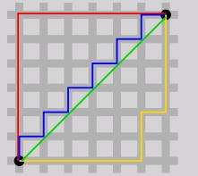
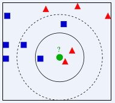

k近邻算法
首先科普一下基本知识
有监督学习和无监督学习
什么是有监督学习什么又是无监督学习？
这个问题可以回答得很简单：是否有监督（supervised），就看输入数据是否有标签（label）。输入数据有标签，则为有监督学习，没标签则为无监督学习。
有监督学习：对于分类，输入的训练数据有特征（feature），有标签（label）。所谓的学习，其本质就是找到特征和标签间的关系（mapping）。这样当有特征而无标签的未知数据输入时，我们就可以通过已有的关系得到未知数据标签。在上述的分类过程中，如果所有训练数据都有标签，则为有监督学习（supervised learning）
无监督学习：输入的训练数据没有标签，称为无监督学习（unsupervised learning）了，也即聚类（clustering）。
半监督学习：训练数据的一部分是有标签的，另一部分没有标签，而没标签数据的数量常常极大于有标签数据数量。
距离
平常常见的距离有
- 欧式距离
- 马氏距离
- 夹角余弦距离
- 汉明距离
- 曼哈顿(Manhattan)距离
- 切比雪夫距离
夹角余弦距离就是两点与原点形成的夹角的余弦值。
下面简单介绍一下欧氏距离和曼哈顿距离
其实非常简单。如下图所示

两点形成的直角三角形中，斜边为欧式距离(绿色线)。两直角边之和为曼哈顿距离(红色线)
k近邻算法介绍
KNN算法是一种lazy-learning监督式近邻算法
KNN算法中，所选择的邻居都是已经正确分类的对象。对于预测的数据，将其与训练样本进行比较，找到最为相似的K个训练样本，并以这K个训练样本中出现最多的标签作为最终的预测标签。
如图所示，如何给这个绿色的圆分类

- 如果K=3，绿色圆点的最近的3个邻居是2个红色小三角形和1个蓝色小正方形，少数从属于多数，基于统计的方法，判定绿色的这个待分类点属于红色的三角形一类。
- 如果K=5，绿色圆点的最近的5个邻居是2个红色三角形和3个蓝色的正方形，还是少数从属于多数，基于统计的方法，判定绿色的这个待分类点属于蓝色的正方形一类。
KNN算法不仅可以用于分类，还可以用于回归。
K近邻算法使用的模型实际上对应于对特征空间的划分。K值的选择，距离度量和分类决策规则是该算法的三个基本要素
算法优缺点
优点
1.精度高
2.对异常值不敏感
3.没有对数据的分布假设
缺点
1、knn算法不像其他算法有一个训练的过程
2、knn算法针对那些分类不均匀的分类训练样本可能误差较大
3、计算量太大，每一个待测测试样本都要遍历一遍训练样本来计算距离
4、我们无法知晓实例样本和典型实例样本具有什么特征，无法给出任何数据的基础结构信息
实现步骤
- 计算已知类别数据集中的点与当前点之间的距离；
- 按照距离递增次序排序；
- 选取与当前点距离最小的k个点；
- 确定k个点所在类别的出现频率；
（K用于选择最近邻的数目，K的选择非常敏感。K值越小意味着模型复杂度越高，从而容易产生过拟合；K值越大则 意味着整体的模型变得简单，学习的近似误差会增大，在实际的应用中，一般采用一个比较小的K值，用交叉验证的 方法，选取一个最优的K值。） - 返回前k个点出现频率最高的类别作为当前点的预测分类
python中无需这么繁琐，直接调用sklearn库即可
knn-Pyhton实现
Scikit-Learn
- 估计器（Estimator）
估计器，可以理解成分类器，主要包含两个函数：
fit()：训练算法，设置内部参数。该函数接收训练集和类别两个参数。
predict()：预测测试集类别，参数为测试集，并返回一个包含测试集各条数据集类别的数组
大多数scikit-learn估计器接收和输出的数据格式均为numpy数组或类似格式。 - 转换器（Transformer）
转换器用于数据预处理和数据转换，主要是三个方法：
fit()：训练算法，设置内部参数。
transform()：数据转换。
fit_transform()：合并fit和transform两个方法。 - 流水线（Pipeline）
使用sklearn.pipeline包，流水线的功能：- 跟踪记录各步骤的操作（以方便地重现实验结果）
- 对各步骤进行一个封装
- 确保代码的复杂程度不至于超出掌控范围
在KNN算法中我们主要使用fit_transform()方法处理数据，在用predict()方法预测结果即可。流水线一般用不到，自由拓展吧~~
另外sklearn库中还集成了很多数据处理方法，比如数据标准化StandardScaler、归一化MinMaxScaler 等
还有交叉验证(Cross-Validation)数据的方法cross_val_score、KFold、cross_val_predict、StratifiedKFold等
上面介绍的这些大家自由学习~~
KNeighborsClassifier
KNeighborsClassifier是一个类，它集成了其他的NeighborsBase, KNeighborsMixin,SupervisedIntegerMixin, ClassifierMixin。这里我们暂时不管它。主要看它的几个主要的方法。当然有的方法是其从父类那里集成过来的。
__init__() 初始化函数(构造函数) 它主要有一下几个参数：
n_neighbors=5
int 型参数 knn算法中指定以最近的几个最近邻样本具有投票权，默认参数为5
weights=’uniform’
str参数 即每个拥有投票权的样本是按什么比重投票，’uniform’表示等比重投票，’distance’表示按距离反比投票，[callable]表示自己定义的一个函数，这个函数接收一个
距离数组，返回一个权值数组。默认参数为‘uniform’
algrithm=’auto’
str参数 即内部采用什么算法实现。有以下几种选择参数：’ball_tree’:球树、’kd_tree’:kd树、’brute’:暴力搜索、’auto’:自动根据数据的类型和结构选择合适的算法。默认情况下是‘auto’。暴力搜索就不用说了大家都知道。具体前两种树型数据结构哪种好视情况而定。KD树是对依次对K维坐标轴，以中值切分构造的树,每一个节点是一个超矩形，在维数小于20时效率最高—可以参看《统计学习方法》第二章。ball tree 是为了克服KD树高维失效而发明的，其构造过程是以质心C和半径r分割样本空间，每一个节点是一个超球体。一般低维数据用kd_tree速度快，用ball_tree相对较慢。超过20维之后的高维数据用kd_tree效果反而不佳，而ball_tree效果要好，具体构造过程及优劣势的理论大家有兴趣可以去具体学习。
leaf_size=30
int参数 基于以上介绍的算法，此参数给出了kd_tree或者ball_tree叶节点规模，叶节点的不同规模会影响数的构造和搜索速度，同样会影响储树的内存的大小。具体最优规模是多少视情况而定。
matric=’minkowski’
str或者距离度量对象 即怎样度量距离。默认是闵氏距离，闵氏距离不是一种具体的距离度量方法，它可以说包括了其他距离度量方式，是其他距离度量的推广，具体各种距离度量只是参数p的取值不同或者是否去极限的不同情况，具体大家可以参考这里，讲的非常详细
p=2
int参数 就是以上闵氏距离各种不同的距离参数，默认为2，即欧氏距离。p=1代表曼哈顿距离等等
metric_params=None
距离度量函数的额外关键字参数，一般不用管，默认为None
n_jobs=1
int参数 指并行计算的线程数量，默认为1表示一个线程，为-1的话表示为CPU的内核数，也可以指定为其他数量的线程，这里不是很追求速度的话不用管，需要用到的话去看看多线程。
使用knn对鸢尾花分类
在之前的OneR算法中对鸢尾花分类的准确率为65.8%，下面看看用knn算法的效果如何
上代码
1 | import numpy as np |
结果
1 | The accuracy is 97.4% |
非常准确！
参考文献
百度百科
简单易学的机器学习算法——K-近邻算法
基于scikit-learn包实现机器学习之KNN(K近邻)-完整示例